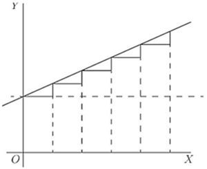
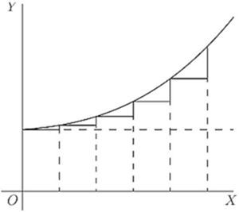
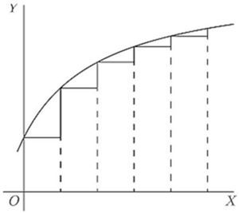
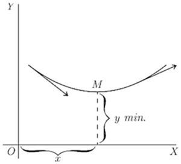
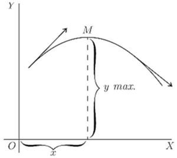

Chapter 14: CHAPTER XII. Curvature of curves¶
14.1 CHAPTER XII. Curvature of curves¶
RETURNING to the process of successive differentiation, it may be asked: Why does anybody want to differentiate twice over? We know that when the variable quantities are space and time, by differentiating twice over we get the acceleration of a moving body, and that in the geometrical interpretation, as applied to curves,  means the slope of the curve. But what can
means the slope of the curve. But what can  mean in this case? Clearly it means the rate (per unit of length
mean in this case? Clearly it means the rate (per unit of length  ) at which the slope is changing-in brief, it is a measure of the curvature of the slope.
) at which the slope is changing-in brief, it is a measure of the curvature of the slope.


Suppose a slope constant, as in Fig. 31.
Here, is of constant value.
Suppose, however, a case in which, like Fig. 32, the slope itself is getting greater upwards, then , that is, , will be positive.
If the slope is becoming less as you go to the right (as in Fig. 14, p. 80), or as in Fig. 33, then, even though the curve may be going upward, since the change is such as to diminish its slope, its will be negative.

It is now time to initiate you into another secret-how to tell whether the result that you get by "equating to zero" is a maximum or a minimum. The trick is this: After you have differentiated (so as to get the expression which you equate to zero), you then differentiate a second time, and look whether the result of the second differentiation is positive or negative. If comes out positive, then you know that the value of  which you got was a minimum; but if comes out negative, then the value of which you got must be a maximum. That's the rule.
which you got was a minimum; but if comes out negative, then the value of which you got must be a maximum. That's the rule.
The reason of it ought to be quite evident. Think of any curve that has a minimum point in it (like Fig. 15, p. 80), or like Fig. 34, where the point of minimum is marked  , and the curve is concave upwards. To the left of the slope is downward, that is, negative, and is getting less negative. To the right of the slope has become upward, and is getting more and more upward. Clearly the change of slope as the curve passes through is such that is positive, for its operation, as increases toward the right, is to convert a downward slope into an upward one.
, and the curve is concave upwards. To the left of the slope is downward, that is, negative, and is getting less negative. To the right of the slope has become upward, and is getting more and more upward. Clearly the change of slope as the curve passes through is such that is positive, for its operation, as increases toward the right, is to convert a downward slope into an upward one.


Similarly, consider any curve that has a maximum point in it (like Fig. 16, p. 81), or like Fig. 35, where the curve is convex, and the maximum point is marked . In this case, as the curve passes through from left to right, its upward slope is converted into a downward or negative slope, so that in this case the "slope of the slope" is negative.
Go back now to the examples of the last chapter and verify in this way the conclusions arrived at as to whether in any particular case there is a maximum or a minimum. You will find below a few worked out examples.
(1) Find the maximum or minimum of
(a) ;
(b) ;
and ascertain if it be a maximum or a minimum in each case.
(a) , and
; it is +; hence it is a minimum.
(b) and . it is hence it is a maximum.
(2) Find the maxima and minima of the function . hence  corresponds to a minimum . For
corresponds to a minimum . For  it is -; hence corresponds to a maximum .
it is -; hence corresponds to a maximum .
(3) Find the maxima and minima of . or , whose solutions are and . ![StartLayout 1st Row 1st Column StartFraction d squared y Over d x squared EndFraction 2nd Column equals minus StartFraction left parenthesis x squared plus 2 right parenthesis squared times left parenthesis 2 x minus 2 right parenthesis minus left parenthesis x squared minus 2 x minus 2 right parenthesis left parenthesis 4 x cubed plus 8 x right parenthesis Over left parenthesis x squared plus 2 right parenthesis Superscript 4 Baseline EndFraction 2nd Row 1st Column Blank 2nd Column equals minus StartFraction 2 x Superscript 5 Baseline minus 6 x Superscript 4 Baseline minus 8 x cubed minus 8 x squared minus 24 x plus 8 Over left parenthesis x squared plus 2 right parenthesis Superscript 4 Baseline EndFraction period EndLayout](img/856.svg)
The denominator is always positive, so it is sufficient to ascertain the sign of the numerator.
If we put , the numerator is negative; the maximum, .
If we put , the numerator is positive; the minimum, .
(4) The expense  of handling the products of a certain factory varies with the weekly output
of handling the products of a certain factory varies with the weekly output  according to the relation , where are positive constants. For what output will the expense be least? hence and .
according to the relation , where are positive constants. For what output will the expense be least? hence and .
As the output cannot be negative, .
Now which is positive for all the values of ; hence corresponds to a minimum.
(5) The total cost per hour of lighting a building with  lamps of a certain kind is where
lamps of a certain kind is where  is the commercial efficiency (watts per candle),
is the commercial efficiency (watts per candle),
Moreover, the relation connecting the average life of a lamp with the commercial efficiency at which it is run is approximately , where  and
and  are constants depending on the kind of lamp.
are constants depending on the kind of lamp.
Find the commercial efficiency for which the total cost of lighting will be least.
We have ![StartLayout 1st Row 1st Column upper C 2nd Column equals upper N left parenthesis StartFraction upper C Subscript l Baseline Over m EndFraction upper E Superscript negative n Baseline plus StartFraction upper P upper C Subscript e Baseline Over 1000 EndFraction upper E right parenthesis comma 2nd Row 1st Column StartFraction d upper C Over d upper E EndFraction 2nd Column equals StartFraction upper P upper C Subscript e Baseline Over 1000 EndFraction minus StartFraction n upper C Subscript l Baseline Over m EndFraction upper E Superscript minus left parenthesis n plus 1 right parenthesis Baseline equals 0 EndLayout](img/871.svg) for maximum or minimum.
for maximum or minimum.
This is clearly for minimum, since which is positive for a positive value of .
For a particular type of 16 candle-power lamps, pence, pence; and it was found that and .
Exercises X. (You are advised to plot the graph of any numerical example.) (See p. 258 for the Answers.)
(1) Find the maxima and minima of
(2) Given , find expressions for  , and for , also find the value of which makes a maximum or a minimum, and show whether it is maximum or minimum.
, and for , also find the value of which makes a maximum or a minimum, and show whether it is maximum or minimum.
(3) Find how many maxima and how many minima there are in the curve, the equation to which is and how many in that of which the equation is
(4) Find the maxima and minima of
(5) Find the maxima and minima of
(6) Find the maxima and minima of
(7) Find the maxima and minima of
(8) Divide a number into two parts in such a way that three times the square of one part plus twice the square of the other part shall be a minimum.
(9) The efficiency  of an electric generator at different values of output is expressed by the general equation: where
of an electric generator at different values of output is expressed by the general equation: where  is a constant depending chiefly on the energy losses in the iron and
is a constant depending chiefly on the energy losses in the iron and  a constant depending chiefly on the resistance of the copper parts. Find an expression for that value of the output at which the efficiency will be a maximum.
a constant depending chiefly on the resistance of the copper parts. Find an expression for that value of the output at which the efficiency will be a maximum.
(10) Suppose it to be known that consumption of coal by a certain steamer may be represented by the formula ; where is the number of tons of coal burned per hour and  is the speed expressed in nautical miles per hour. The cost of wages, interest on capital, and depreciation of that ship are together equal, per hour, to the cost of 1 ton of coal. What speed will make the total cost of a voyage of 1000 nautical miles a minimum? And, if coal costs 10 shillings per ton, what will that minimum cost of the voyage amount to?
is the speed expressed in nautical miles per hour. The cost of wages, interest on capital, and depreciation of that ship are together equal, per hour, to the cost of 1 ton of coal. What speed will make the total cost of a voyage of 1000 nautical miles a minimum? And, if coal costs 10 shillings per ton, what will that minimum cost of the voyage amount to?
(11) Find the maxima and minima of
(12) Find the maxima and minima of